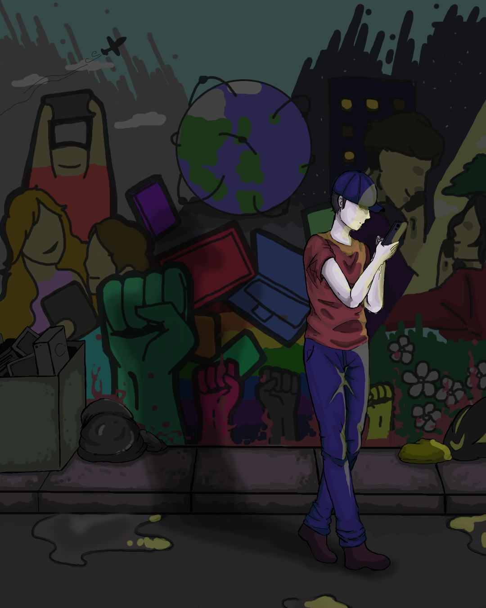
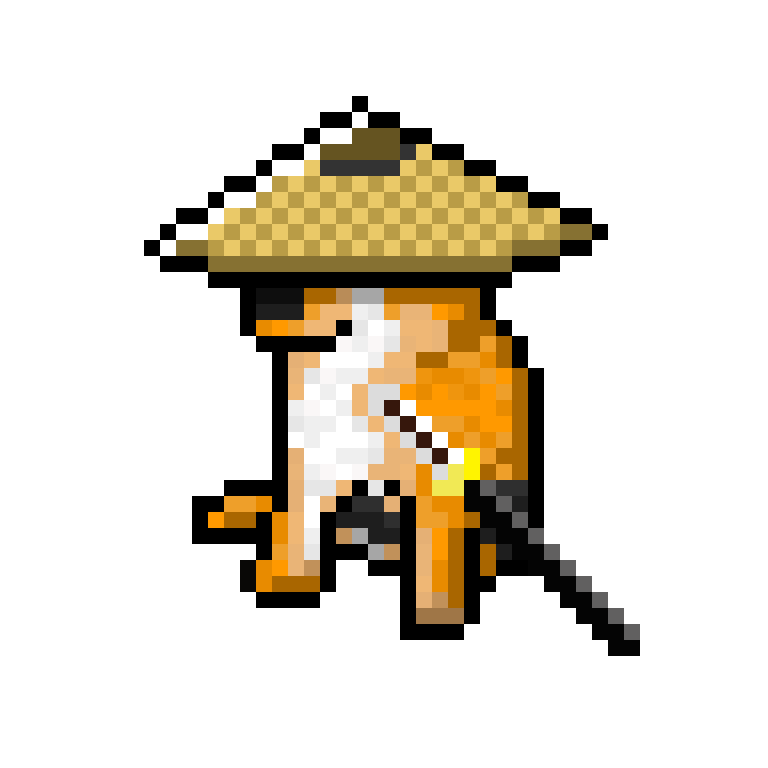
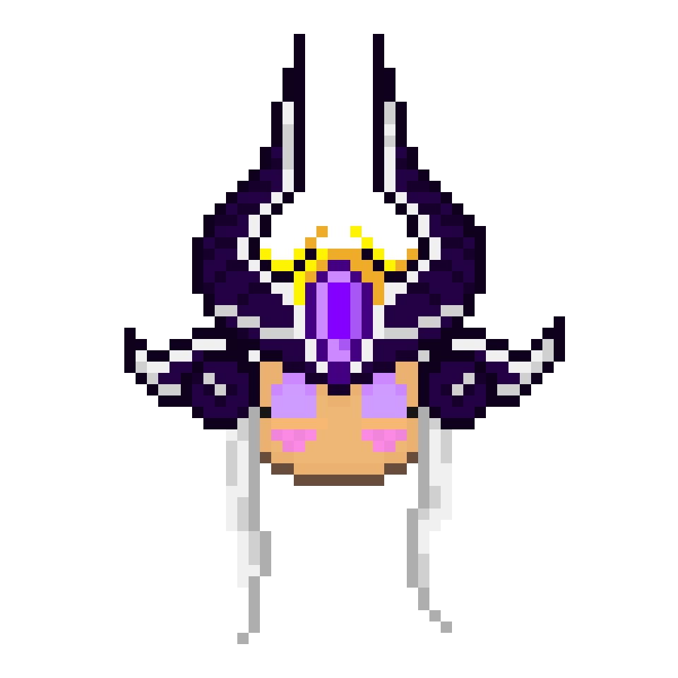
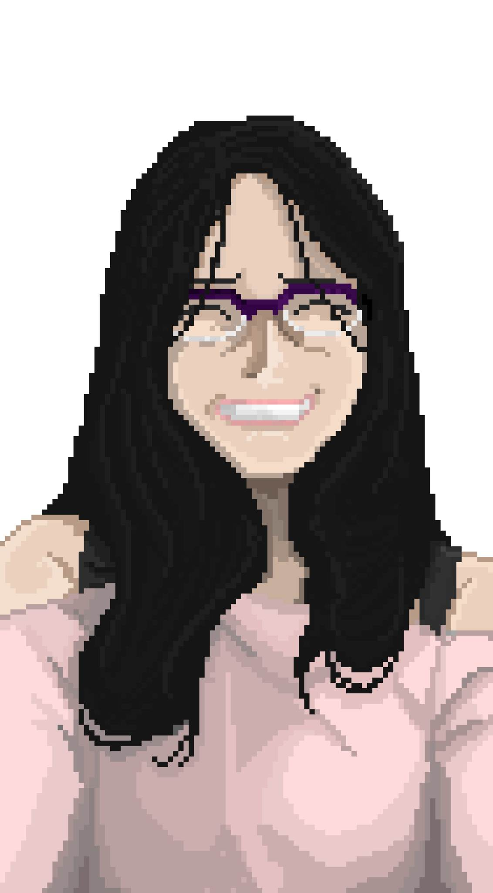

Here are my Works
Back to Works
Dangers of Technology
A piece I made for an art contest, 2026.

Ser Duncan the Tall
My fanart of a famous character, Ser Duncan the Tall, from the book series Tales of Dunk and Egg.

Samurai Doggo
My pixelated art of a samurai dog, originally meant as a game sprite.

Syndra
My chibi pixelated fanart of a League of Legends character, Syndra.

My GF
My pixelated art of my love.